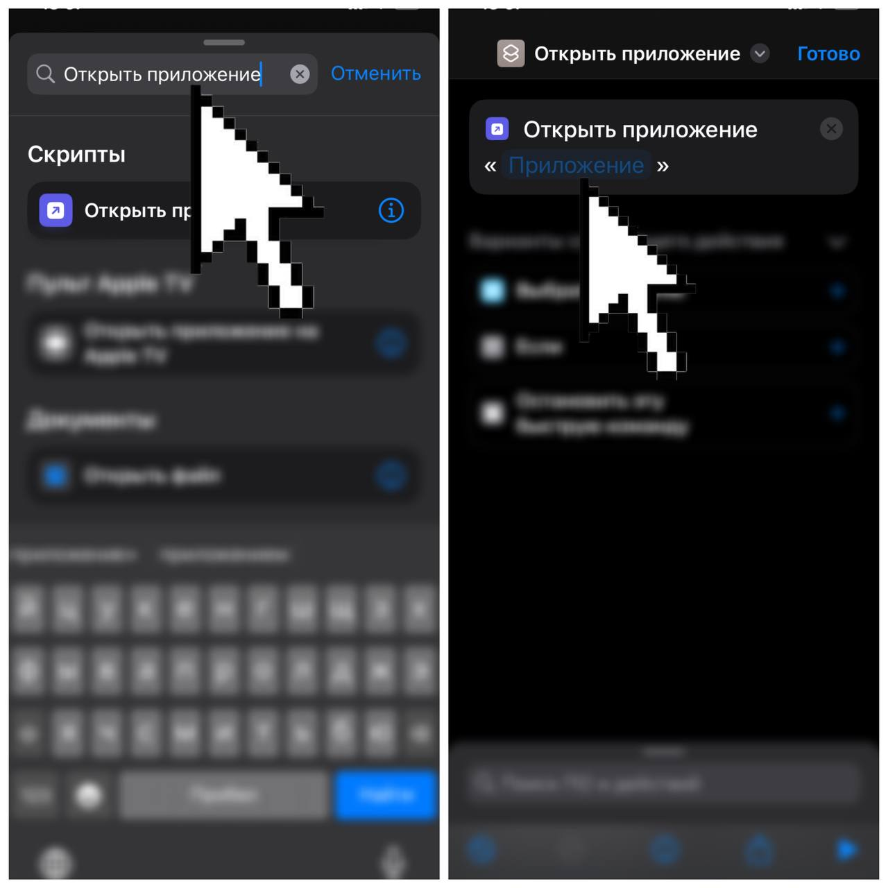
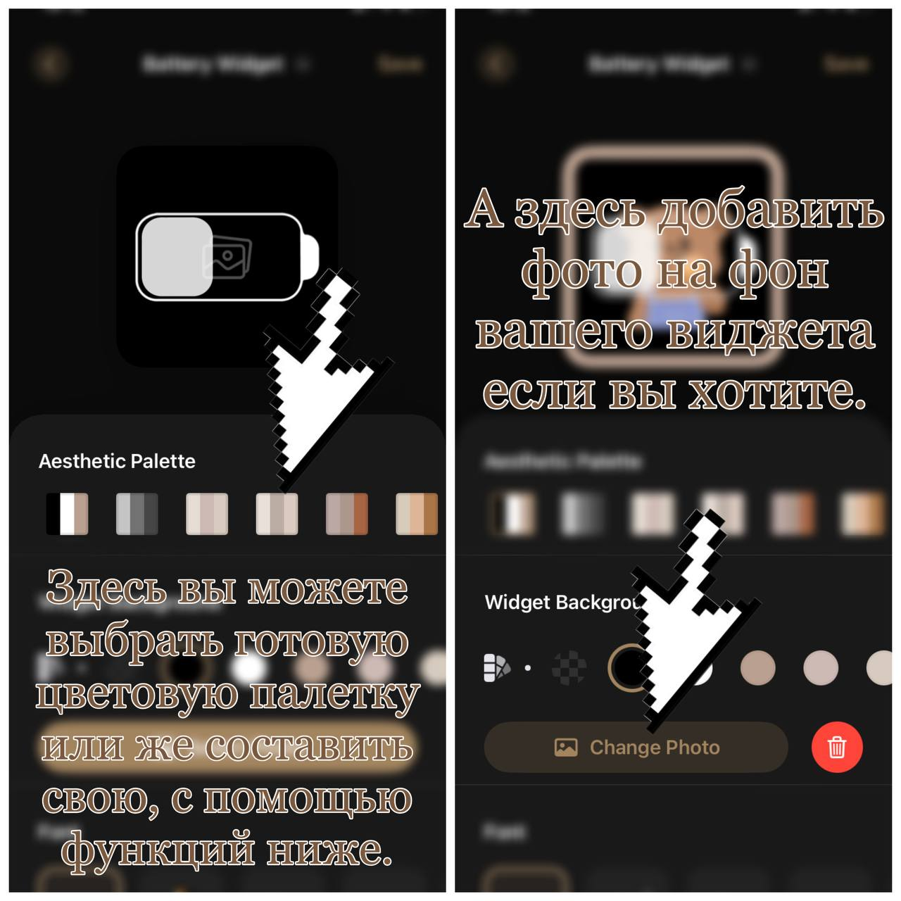
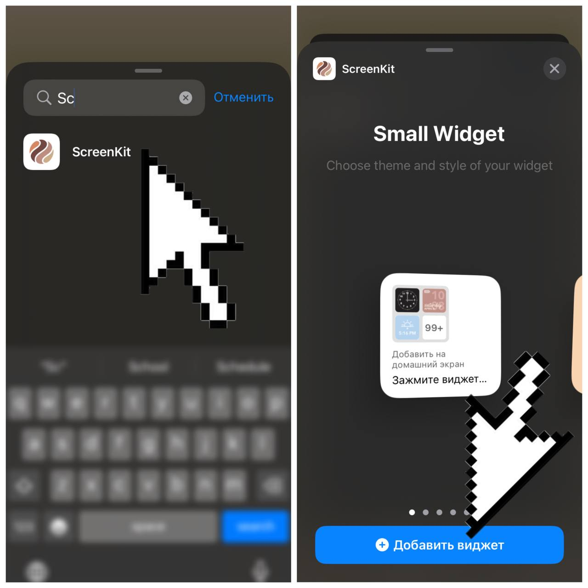

Туториал
Для начала определитесь с оформлением и стилем вашего экрана. После этого скачайте или выберете все нужные картинки, цвета для вашего оформления и обои. Далее вам следует удалить все приложения с экрана домой
После того как на вашем рабочем столе не осталось приложений, мы заходим в приложение «команды» и начинаем заменять иконки приложений на желаемые вам картинки:

После выполнения всех действий на вашем экране появится иконка (команда) которая позволит вам быстро открыть нужное приложение.
Таким способом оформите все нужные вам приложения.
После оформления приложений было бы неплохо добавить разнообразия в ваше оформление с помощью виджетов. Виджеты могут быть просто украшением с определённым изображением или же функциональные, которые могут показывать вам погоду, календарь, цитаты, шагомер, время, уровень батареи, заметки и многое другое.
Во первых нужно определить как ваши виджеты будут располагаться на экране. Примечание: виджеты могут быть трёх размеров, small, medium, large, не забывайте учитывать это при расположении.
После чего заходим в приложение «ScreenKit» и создаём нужные виджеты

После завершения создания виджетов выходим из приложения и добавляем виджеты на экран.

Таким способом добавьте все виджеты на свой экран